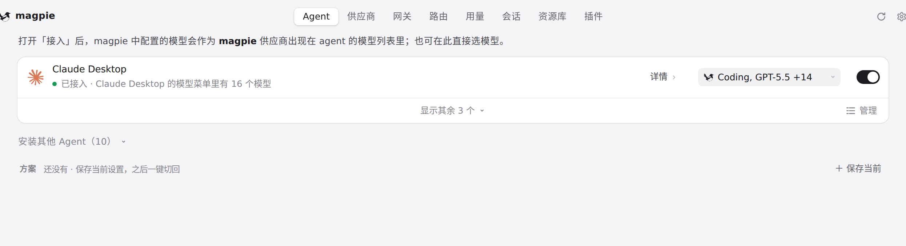
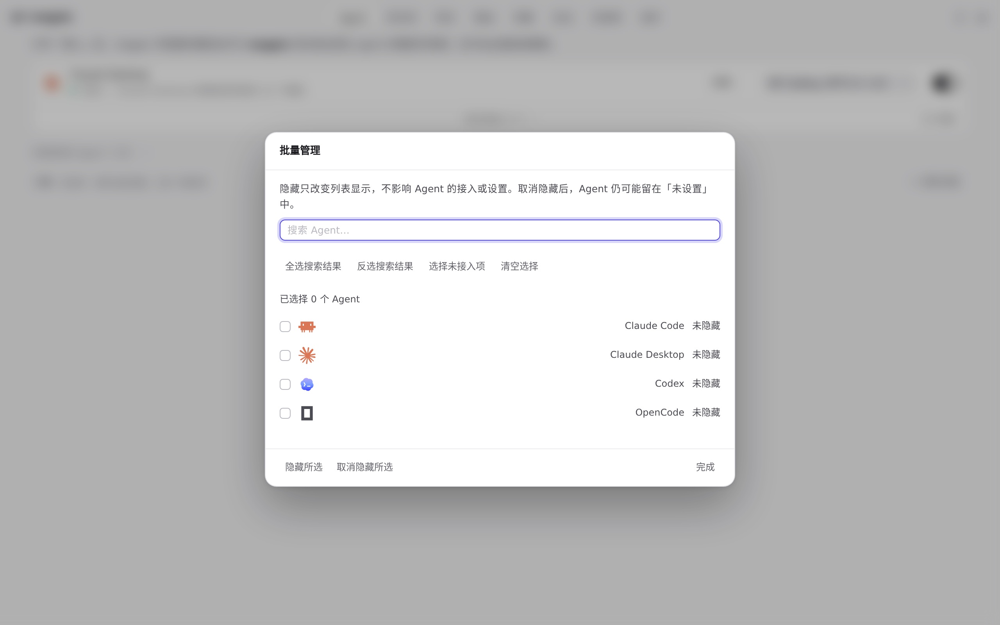
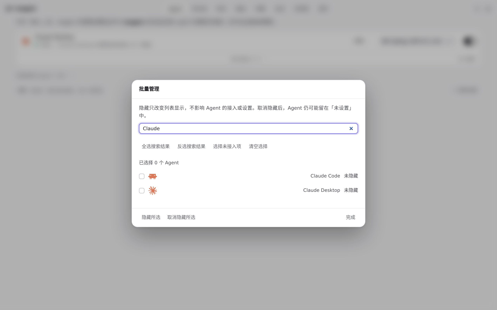
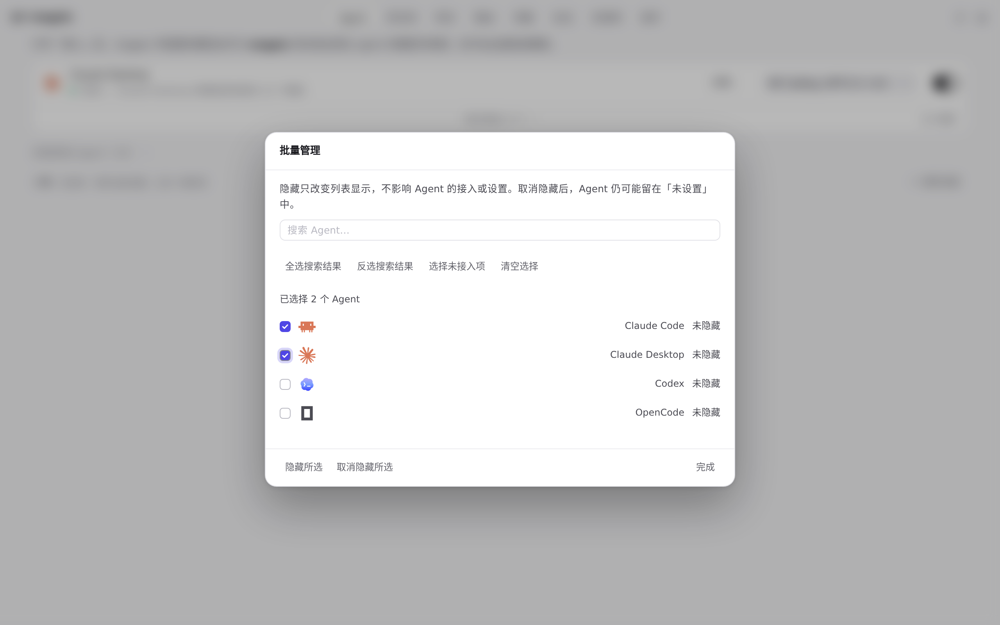
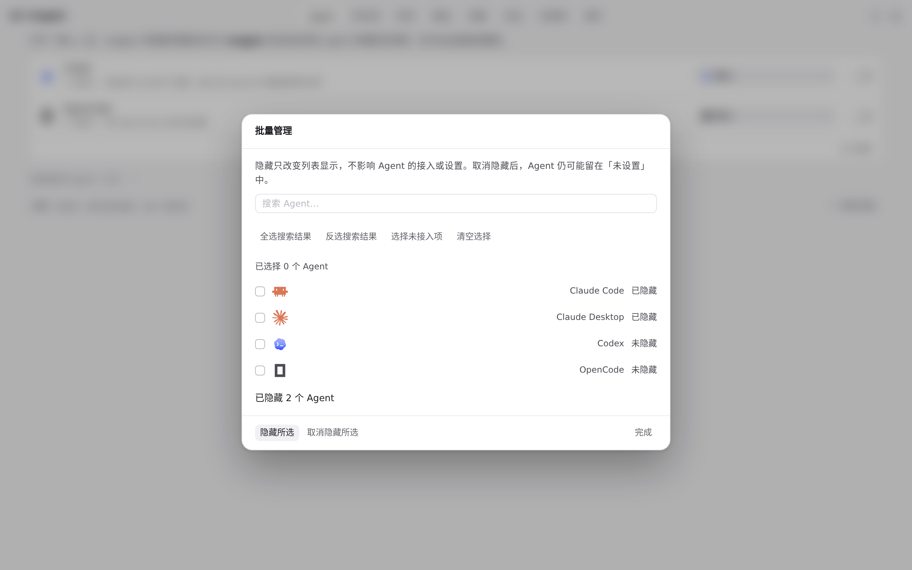
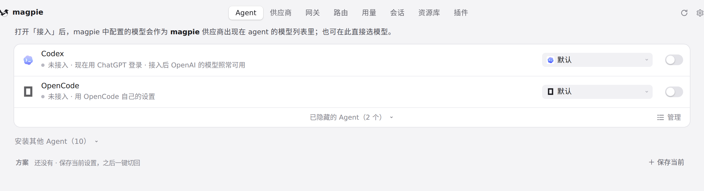

#1302 界面预览
commit 7a98879 · 回到 PR · Agents 页列表底部多了一条管理栏：原有折叠控件旁新增「管理」按钮，点开一个批量管理对话框，可搜索 Agent、全选/反选搜索结果、选择未接入项、清空选择，并批量隐藏或取消隐藏所选 Agent。另外插件页的 npm 搜索结果改为在原位置重绘，避免答案到达时点掉正在按下的卡片。
红线是鼠标走过的轨迹，红色圆环是一次点击；底部文字是这一步在做什么。空格暂停，← → 逐段查看。

Agents 底部的批量管理入口 · Agents 列表底部：折叠控件旁边新增的「管理」按钮

Agents 底部的批量管理入口 · 批量管理对话框：搜索框、批量选择按钮与 Agent 勾选行

Agents 底部的批量管理入口 · 输入后的对话框内容

批量隐藏所选 Agent · 勾选两行后底部的选择计数与按钮状态

批量隐藏所选 Agent · 批量隐藏后对话框里显示的内容

批量隐藏所选 Agent · 关闭后的 Agents 列表与底部管理栏